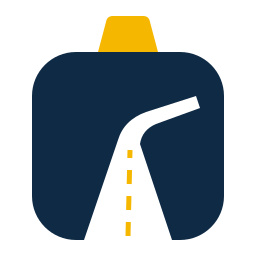

Dhruv Fine Trip — Blueprint
One-page taxi website + browser voice booking assistant · CTA: book (voice/type) → WhatsApp, Call · Next.js (JavaScript) + plain CSS · Last updated 2026-11-02
0. Logo
Road badge: a badge wearing a taxi roof sign, with the road climbing into the hills. Picked by the user on 2026-11-02 (options: logo-options.html).

1. Sitemap
One page with anchor sections, plus two API routes.
flowchart TD
home["Home / (one page)"] --> fleet["#fleet"]
home --> services["#services"]
home --> book["#book – Voice booking assistant"]
home --> contact["#contact"]
home -.-> notfound["404 page"]
api_agent["POST /api/agent"]
api_book["POST /api/bookings"]
book -.-> api_agent
book -.-> api_book
2. Section interlink map
Sections inside the page (solid) and CTA links (dashed).
flowchart LR
subgraph HOME["Home"]
h_header["Header"] --> h_hero["Hero"] --> h_fleet["Fleet"] --> h_svc["Services"] --> h_book["Voice booking"] --> h_contact["Contact"] --> h_footer["Footer"]
end
h_hero -.-> h_book
h_fleet -.-> h_book
h_svc -.-> h_book
h_header -.-> call(["tel: 7310224488"])
h_hero -.-> wa(["WhatsApp chat"])
h_book -.-> wa
h_contact -.-> call
h_contact -.-> map(["Google Maps"])
3. User flows
Booking by voice, by typing, or directly by call / WhatsApp.
flowchart TD
start(["Visitor lands on Home"]) --> choose{"How to book?"}
choose -- "Voice" --> mic["Taps mic, allows microphone"]
choose -- "Type" --> typed["Types in the chat box"]
mic --> ask["Assistant asks: pickup, drop, date, car, name, phone"]
typed --> ask
ask --> summary["Assistant reads the summary back"]
summary -- "Yes" --> saved["POST /api/bookings: booking id created"]
summary -- "No" --> ask
saved --> wa(["Send on WhatsApp / Call buttons shown"])
choose -- "Call / WhatsApp" --> direct(["Phone dialer / WhatsApp opens"])
4. Shared components
Built before any section, reused everywhere.
flowchart TD
layout["RootLayout – metadata, JSON-LD"] --> header["Header"]
layout --> main["page.js – sections"]
layout --> footer["Footer"]
header --> logo["Logo (SVG)"]
main --> section["Section wrapper (CSS class)"]
section --> btn["Button / link styles"]
section --> card["Card"]
main --> agent["VoiceAgent (client)"]
5. Architecture
Same diagram as docs/ARCHITECTURE.md §1. Audio stays in the browser; only text reaches the server.
flowchart LR
browser["Browser – Next.js page + VoiceAgent"] -- "Web Speech API (on device)" --> speech["Mic to text / text to voice"]
browser -- "POST /api/agent (text only)" --> agent_api["Route: /api/agent"]
browser -- "POST /api/bookings" --> book_api["Route: /api/bookings"]
agent_api --> agent_lib["lib/agent.js – pure state machine"]
book_api --> book_lib["lib/bookings.js – validate + save"]
book_lib --> store[("data/bookings.json")]
browser -.-> wa(["WhatsApp / tel: links"])
later["Phase E: WhatsApp webhook, phone call"] -.-> agent_lib
6. Data model
One entity. JSON file first; MongoDB if hosted on Vercel.
erDiagram
BOOKING {
string id
string pickup
string drop
string date
string car
string name
string phone
string createdAt
}
7. Build order
Keep in sync with docs/PROJECT_PLAN.md — status: done · in progress · todo.
| # | Phase | Step | Status |
|---|---|---|---|
| 1 | A | Setup (Next.js JS scaffold) | done |
| 2 | A | Test harness (node --test, Playwright, regress.sh) | done |
| 3 | A | Design foundation (tokens, light/dark) | done |
| 4 | A | Logo (SVG + favicon) | done |
| 5 | A | Layout shell (Header, Footer, business data, 404) | done |
| 6 | A | Phase A regression | done |
| 7–10 | B | Hero · Fleet · Services · Contact | todo |
| 11 | B | Phase B regression | todo |
| 12–14 | C | lib/agent.js + /api/agent + /api/bookings | todo |
| 15–17 | C | VoiceAgent UI · voice layer · Hindi toggle | todo |
| 18 | C | Phase C regression | todo |
| 19–21 | D | SEO · polish · launch audit | todo |
| 22–25 | E | WhatsApp webhook · phone call agent · owner alerts (paid, later) | todo |